01 — Credit assignment
Episode-level credit cannot see the fatal step
GRPO ranks whole trajectories by a single scalar return, failing to isolate the first unrecoverable turn.
Zero-gradient silence · σ = 0
Advantage vanishes
When all eight sampled rollouts fail with the same return, group variance is zero. The advantage is zero, so the policy gets no gradient update.
- 48.3%
- Sokoban groups frozen
- 16.5%
- PrimitiveSkill groups frozen
Coarse episode-level credit · σ > 0
Length, not the fatal step
Even with a −0.1 step penalty (FrozenLake / Navigation), the scalar advantage is still painted onto every action token.
- σ > 0
- Still episode-level
- t*
- Never isolated

Takeaway Failed GRPO trajectories either suffer from zero-gradient silence or coarse episode-level credit—neither can locate the first unrecoverable action (t*).
02 — Rollback probe
Physical state rollback dominates skill hints
OPD supplies token-level targets from a teacher; OPSD relaxes that with hindsight. On multi-turn VLM agents, a counterfactual rollback probe isolates what actually drives the gain.
A domain feasibility certificate Feas(s, k) ∈ {0,1} says whether state s can still reach the goal in k steps. The pivot step t* is the first action that leaves an infeasible remaining budget; if the trajectory never becomes infeasible, t* is T−1.
Pivot step
t* = min { t : Feas(st+1, T − t − 1) = 0 }
- t*
- pivot step: first action that makes the remaining budget infeasible, else T−1
- Feas(s, k)
- 1 if state s can still reach the goal in k steps, else 0
- st+1
- state after taking action at
- T
- realized trajectory length
- T − t − 1
- remaining action budget after step t (kt)
On failed rollouts we roll the environment back and resample one suffix from the base policy (n=1). Four arms vary only the restore time and whether a skill hint is appended: no-hint at t*, no-hint at t*+1, 3B-self (failure mode and self-generated skill, mirroring OPSD), and 8B-teacher (Qwen3-VL-8B skill, mirroring OPD).
Suffix-return lift ΔR
No-hint rollback at st* boosts suffix returns ΔR on every task (3.3%–56.6%). Resetting one step later (t*+1) sharply drops ΔR on four tasks—Sokoban 3.3%→0.9%, PrimitiveSkill 17.7%→8.3%, FrozenLake 18.2%→8.1%—so recovery hinges on temporal precision. Navigation barely moves (56.6%→53.6%).
Skill hints add only a residual: 3B-self differs from no-hint by ≤2.6 points; 8B-teacher advances 3B-self by 0.3–3.5. On Navigation, no-hint at t* is already the best of the four arms.

Zero-variance groups
The same no-hint restore at t* also cuts zero-variance group rates where GRPO advantages vanish—Sokoban 48.3%→41.7%, PrimitiveSkill 16.5%→3.8%. State rollback at the pivot reopens a usable gradient and is the primary share of the OPD/OPSD gain.

What each probe arm is allowed to see
All arms start from the same failed untrained Qwen2.5-VL-3B rollouts and resample one suffix with that base policy. no-hint restores st* and adds nothing to the prompt. no-hint (t*+1) restores one step later. 3B-self appends failure mode m* and a skill from πbase. 8B-teacher appends a skill from Qwen3-VL-8B.
Takeaways
-
i
State rollback drives recovery
No-hint restore at t* lifts ΔR on every task (3.3%–56.6%) and cuts zero-variance groups (Sokoban 48.3%→41.7%, PrimitiveSkill 16.5%→3.8%). Physical restoration at the pivot is the core mechanism of OPD/OPSD here.
-
ii
Skill hints offer marginal value
Whether self-generated (3B-self) or teacher-provided (8B-teacher), skill text yields negligible gains beyond pure state rollback: ≤2.6 points vs no-hint, and 0.3–3.5 between 8B and 3B.
-
iii
Temporal precision is critical
Delaying rollback by a single step (t*+1) sharply degrades recovery (Sokoban 3.3%→0.9%, PrimitiveSkill 17.7%→8.3%). Hitting the pivot—not merely rewinding nearby—is what matters.
03 — The motivation
From physical rollbacks to parameter updates
The probe exposes a rollback paradox: recovery lives in restoring the state at t*, yet an explicit rewind is too expensive for online RL and impossible in non-rewindable environments.
Rollback paradox Trajectory recovery stems overwhelmingly from state rollback at the pivot turn. Explicit physical rollbacks are computationally prohibitive during online RL, and impossible in real-world, non-rewindable environments.
Inference also cannot tolerate extra skill prompts or a second model. To convert physical restoration into parameter updates without simulator resets, a practical post-training method has to meet three requirements.
Non-invasive pivot localization
Identify t* directly from failure trajectory histories, bypassing environment resets.
Internalized credit assignment
Convert the localized pivot into token-level gradients on the original failed rollout, without physical rollbacks.
Zero test-time overhead
Internalize hindsight into the weights so deployment is an unprivileged student: no skill prompt, no auxiliary model.
04 — The recipe
Three roles, one policy πθ
PIVOT consolidates Student, Analyzer, and Teacher in a single VLM. It internalizes pivot localization and visual state restoration into token-level updates—no environment rollback in training, no skill hint at test time.
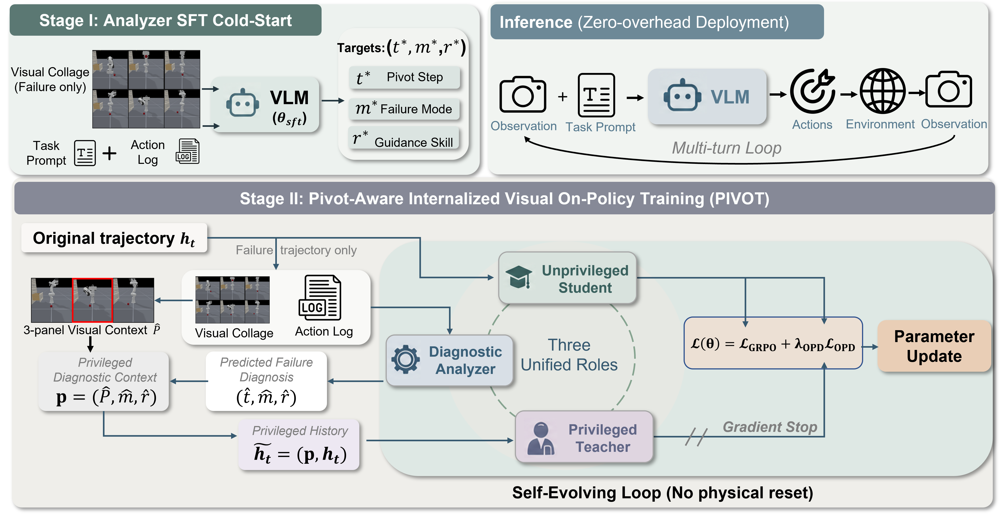
Stages
Visual diagnostic cold-start
Failed on-policy rollouts become a collage C(τ)=Grid(o0,…,oT−1) plus the action sequence. SFT maps that input to a diagnostic triplet (t*, m*, r*). No latent state is shown. About 960–1.7k accepted trajectories per environment, three epochs, then θ←θsft.
Internalize pivot hindsight
Each update samples a GRPO group of eight. On a failed rollout the Analyzer predicts (t̂, m̂, r̂) and crops a three-frame panel Pt̂. A detached Teacher re-scores the original failed tokens under the privileged context p=(Pt̂, m̂, r̂). Teacher gradients are stopped.
Unprivileged deployment
Analyzer and Teacher branches are stripped. The agent is πθ as a Student on ordinary history ht, with zero extra compute and no skill prompt.
Roles
Reads the collage and action log. Predicts the pivot, failure mode, and optional skill, then builds the privileged context p = (Pt̂, m̂, r̂).
Re-scores the student’s own failed tokens under h̃t = (p, ht). Stop-gradient. This is internalized restoration: the same tokens, as if the pivot panel were visible.
Log-probability under the ordinary history. Joint GRPO on the group advantage plus confidence-gated OPD on failed trajectories only.
Joint objective
ℒ = ℒGRPO + λ ℒOPD
Failure modes the Analyzer is asked to name
- Sokoban and FrozenLake: timeout if the goal is still reachable with unlimited steps, deadlock if it is not.
- Navigation: format, blocked, stagnation, or budget.
- PrimitiveSkill: timeout, format, wrong target, or order error.
- SVG: format, regression, stagnation, or mismatch on the last scored canvas.
05 — How credit moves
The panel is the internalized rollback
The Teacher never resets the simulator. A three-frame neighborhood Pt̂ = [ot̂−1, ot̂, ot̂+1] around the predicted pivot is enough to re-score the original failed tokens.
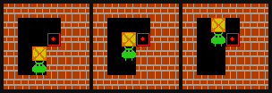
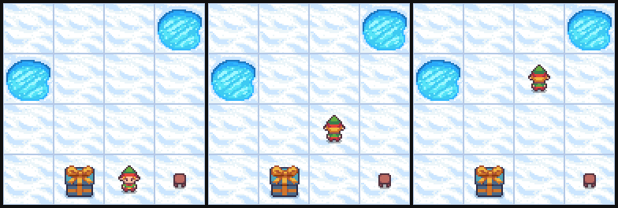
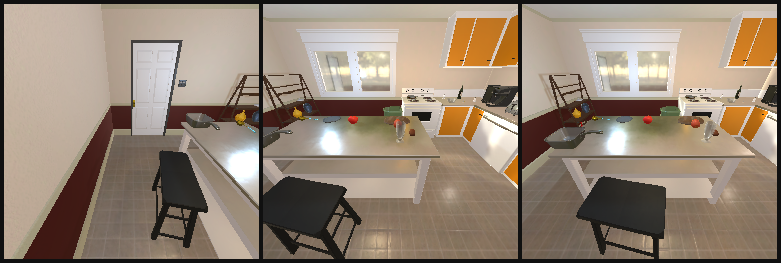
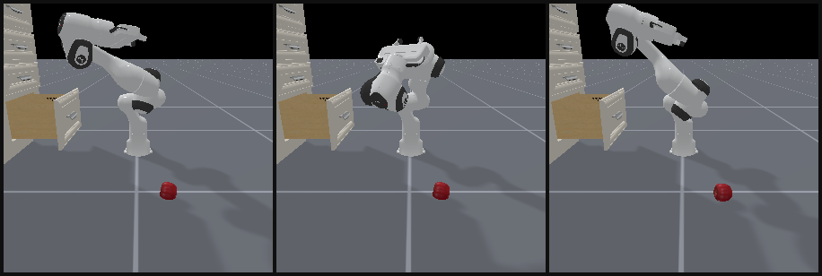
Analyzer SFT examples
Stage I maps (q, C(τ), a0:T−1) → (t*, m*, r*) on failed rollouts. Each accepted example pairs a visual collage and compact action log with JSON supervision; the highlighted log line is the pivot. Input uses only observable history—no environment state. Splits are 90/10; the same recipe is used on 2B.
| Environment | Accepted | Train | Val |
|---|---|---|---|
| Sokoban | 1170 | 1053 | 117 |
| FrozenLake | 1375 | 1237 | 138 |
| Navigation | 959 | 863 | 96 |
| PrimitiveSkill | 1677 | 1509 | 168 |
| SVG | 1719 | 1547 | 172 |
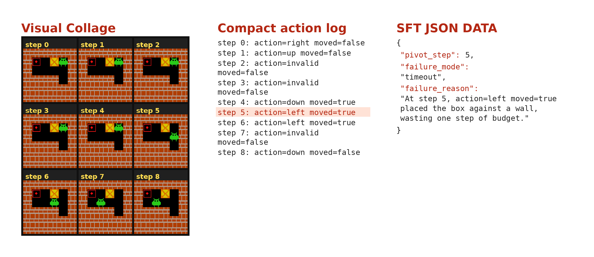
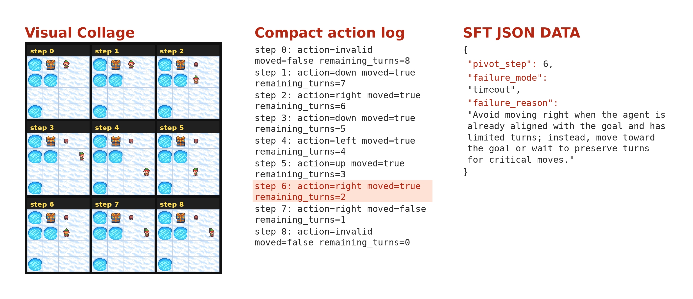
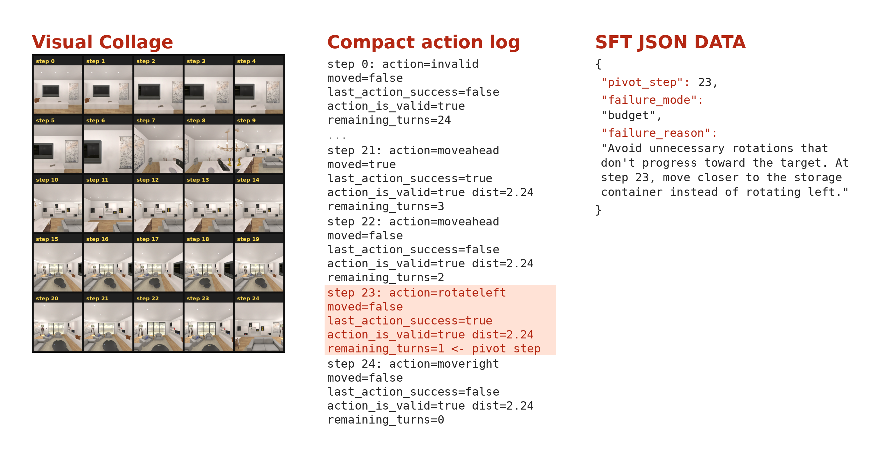
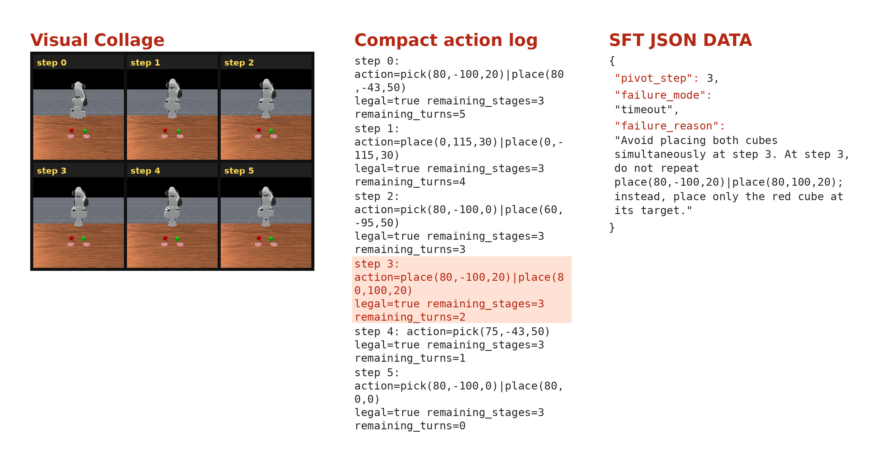
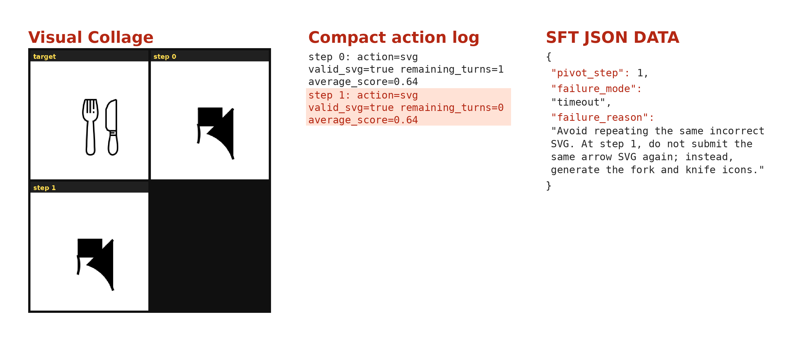
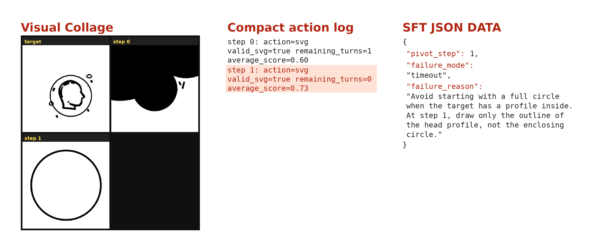
06 — Evidence
SOTA without extra machinery at test time
Five VAGEN tasks spanning cognitive grid puzzles, 3D embodied control and navigation, and generative SVG. Success rate everywhere except SVG, which uses a DINO and DreamSim composite. Full PIVOT is the M+P+R stack.
| Method | Cognitive Grid | Embodied 3D Control | Generative | All | ||||||||||
|---|---|---|---|---|---|---|---|---|---|---|---|---|---|---|
| Sok. | Frozen Lake |
Navigation | PrimitiveSkill | SVG | ||||||||||
| Base | Com. | Avg. | Place | Stack | Draw. | Align | Avg. | DINO | DS | Avg. | ||||
| Open-source VLMs | ||||||||||||||
| Qwen2.5-VL-72B | 0.20 | 0.44 | 0.70 | 0.77 | 0.74 | 1.00 | 0.50 | 0.00 | 1.00 | 0.63 | 0.84 | 0.62 | 0.73 | 0.55 |
| Qwen2.5-VL-7B | 0.14 | 0.14 | 0.33 | 0.38 | 0.35 | 0.00 | 0.00 | 0.00 | 0.75 | 0.19 | 0.84 | 0.27 | 0.56 | 0.28 |
| Qwen2.5-VL-3B | 0.13 | 0.14 | 0.20 | 0.26 | 0.23 | 0.00 | 0.00 | 0.00 | 0.00 | 0.00 | 0.79 | 0.30 | 0.54 | 0.21 |
| VLM-R1-3B | 0.16 | 0.15 | 0.33 | 0.34 | 0.34 | 0.00 | 0.00 | 0.00 | 0.00 | 0.00 | 0.79 | 0.27 | 0.54 | 0.24 |
| Proprietary VLMs | ||||||||||||||
| o4-mini | 0.44 | 0.82 | 0.75 | 0.75 | 0.75 | 1.00 | 0.50 | 0.00 | 0.75 | 0.56 | 0.90 | 0.66 | 0.78 | 0.67 |
| GPT-4o | 0.43 | 0.54 | 0.75 | 0.69 | 0.72 | 0.50 | 0.63 | 0.00 | 0.88 | 0.50 | 0.91 | 0.69 | 0.80 | 0.60 |
| Gemini 2.5 Pro | 0.58 | 0.78 | 0.63 | 0.63 | 0.63 | 0.63 | 0.63 | 0.00 | 0.75 | 0.50 | 0.93 | 0.78 | 0.86 | 0.67 |
| Claude 4.5 Sonnet | 0.31 | 0.80 | 0.67 | 0.67 | 0.67 | 0.63 | 0.50 | 0.00 | 1.00 | 0.53 | 0.95 | 0.81 | 0.88 | 0.64 |
| Claude 3.7 Sonnet | 0.25 | 0.69 | 0.48 | 0.47 | 0.47 | 0.63 | 0.13 | 0.00 | 1.00 | 0.44 | 0.94 | 0.77 | 0.85 | 0.54 |
| Previous SOTA / OPD baseline | ||||||||||||||
| VAGEN-Full | 0.79 | 0.72 | 0.80 | 0.81 | 0.81 | 1.00 | 0.88 | 1.00 | 1.00 | 0.97 | 0.90 | 0.66 | 0.78 | 0.81 |
| GLANCE-Full | 0.85 | 0.78 | 0.86 | 0.88 | 0.87 | 1.00 | 0.88 | 1.00 | 1.00 | 0.97 | 0.92 | 0.70 | 0.81 | 0.86 |
| SDAR | 0.52 | 0.77 | 0.88 | 0.84 | 0.86 | 1.00 | 1.00 | 1.00 | 1.00 | 1.00 | 0.91 | 0.68 | 0.80 | 0.79 |
| PIVOT (Qwen2.5-VL-3B-Instruct) | ||||||||||||||
| Vanilla-GRPO | 0.78 | 0.71 | 0.87 | 0.75 | 0.81 | 0.92 | 0.86 | 0.89 | 0.93 | 0.90 | 0.90 | 0.66 | 0.78 | 0.80 |
| SFT-GRPO | 0.82 | 0.75 | 0.93 | 0.77 | 0.85 | 0.96 | 0.90 | 0.93 | 0.97 | 0.94 | 0.92 | 0.68 | 0.80 | 0.83 |
| M | 0.86 | 0.83 | 0.94 | 0.78 | 0.86 | 1.00 | 1.00 | 1.00 | 1.00 | 1.00 | 0.93 | 0.73 | 0.83 | 0.88 |
| M+P | 0.90 | 0.77 | 0.95 | 0.83 | 0.89 | 1.00 | 1.00 | 1.00 | 1.00 | 1.00 | 0.93 | 0.74 | 0.84 | 0.88 |
| M+P+R | 0.95+16% | 0.84+12% | 0.97+4% | 0.83+8% | 0.90+6% | 1.00+4% | 1.00+11% | 1.00+8% | 1.00+3% | 1.00+6% | 0.93+1% | 0.71+4% | 0.82+3% | 0.90+8% |
Paper Tab. 1. Cyan deltas are relative gains of M+P+R over SFT-GRPO. M / M+P / M+P+R enrich the Teacher context with failure mode, pivot panel, and optional skill text. M+P+R is 0.90 overall (+8% over SFT-GRPO, +5% over GLANCE-Full).
| Method | Cognitive Grid | Embodied 3D Control | Generative | All | ||||||||||
|---|---|---|---|---|---|---|---|---|---|---|---|---|---|---|
| Sok. | Frozen Lake |
Navigation | PrimitiveSkill | SVG | ||||||||||
| Base | Com. | Avg. | Place | Stack | Draw. | Align | Avg. | DINO | DS | Avg. | ||||
| Open-source VLMs | ||||||||||||||
| Qwen2.5-VL-72B | 0.20 | 0.44 | 0.70 | 0.77 | 0.74 | 1.00 | 0.50 | 0.00 | 1.00 | 0.63 | 0.84 | 0.62 | 0.73 | 0.55 |
| Qwen2.5-VL-7B | 0.14 | 0.14 | 0.33 | 0.38 | 0.35 | 0.00 | 0.00 | 0.00 | 0.75 | 0.19 | 0.84 | 0.27 | 0.56 | 0.28 |
| Qwen2.5-VL-3B | 0.13 | 0.14 | 0.20 | 0.26 | 0.23 | 0.00 | 0.00 | 0.00 | 0.00 | 0.00 | 0.79 | 0.30 | 0.54 | 0.21 |
| VLM-R1-3B | 0.16 | 0.15 | 0.33 | 0.34 | 0.34 | 0.00 | 0.00 | 0.00 | 0.00 | 0.00 | 0.79 | 0.27 | 0.54 | 0.24 |
| Proprietary VLMs | ||||||||||||||
| o4-mini | 0.44 | 0.82 | 0.75 | 0.75 | 0.75 | 1.00 | 0.50 | 0.00 | 0.75 | 0.56 | 0.90 | 0.66 | 0.78 | 0.67 |
| GPT-4o | 0.43 | 0.54 | 0.75 | 0.69 | 0.72 | 0.50 | 0.63 | 0.00 | 0.88 | 0.50 | 0.91 | 0.69 | 0.80 | 0.60 |
| Gemini 2.5 Pro | 0.58 | 0.78 | 0.63 | 0.63 | 0.63 | 0.63 | 0.63 | 0.00 | 0.75 | 0.50 | 0.93 | 0.78 | 0.86 | 0.67 |
| Claude 4.5 Sonnet | 0.31 | 0.80 | 0.67 | 0.67 | 0.67 | 0.63 | 0.50 | 0.00 | 1.00 | 0.53 | 0.95 | 0.81 | 0.88 | 0.64 |
| Claude 3.7 Sonnet | 0.25 | 0.69 | 0.48 | 0.47 | 0.47 | 0.63 | 0.13 | 0.00 | 1.00 | 0.44 | 0.94 | 0.77 | 0.85 | 0.54 |
| Previous SOTA / OPD baseline | ||||||||||||||
| VAGEN-Full | 0.79 | 0.72 | 0.80 | 0.81 | 0.81 | 1.00 | 0.88 | 1.00 | 1.00 | 0.97 | 0.90 | 0.66 | 0.78 | 0.81 |
| GLANCE-Full | 0.85 | 0.78 | 0.86 | 0.88 | 0.87 | 1.00 | 0.88 | 1.00 | 1.00 | 0.97 | 0.92 | 0.70 | 0.81 | 0.86 |
| SDAR | 0.52 | 0.77 | 0.88 | 0.84 | 0.86 | 1.00 | 1.00 | 1.00 | 1.00 | 1.00 | 0.91 | 0.68 | 0.80 | 0.79 |
| PIVOT (Qwen3-VL-2B-Instruct) | ||||||||||||||
| Vanilla-GRPO | 0.77 | 0.89 | 0.97 | 0.73 | 0.85 | 0.77 | 0.77 | 0.77 | 0.77 | 0.77 | 0.90 | 0.68 | 0.79 | 0.81 |
| SFT-GRPO | 0.80 | 0.87 | 0.92 | 0.74 | 0.83 | 0.83 | 0.80 | 0.81 | 0.84 | 0.82 | 0.91 | 0.67 | 0.79 | 0.82 |
| M | 0.82 | 0.81 | 0.93 | 0.75 | 0.84 | 1.00 | 1.00 | 1.00 | 1.00 | 1.00 | 0.92 | 0.70 | 0.81 | 0.86 |
| M+P | 0.97 | 0.89 | 0.97 | 0.80 | 0.89 | 1.00 | 1.00 | 1.00 | 1.00 | 1.00 | 0.93 | 0.71 | 0.82 | 0.91 |
| M+P+R | 0.92+15% | 0.90+3% | 0.98+7% | 0.91+23% | 0.95+14% | 1.00+20% | 1.00+25% | 1.00+23% | 1.00+19% | 1.00+22% | 0.93+2% | 0.76+13% | 0.85+8% | 0.92+12% |
Paper Tab. 1. Same baseline block; PIVOT rows use Qwen3-VL-2B. Privileged context scales M (0.86) → M+P (0.91) → M+P+R (0.92, +12% over SFT-GRPO). Sokoban peaks at M+P (0.97).
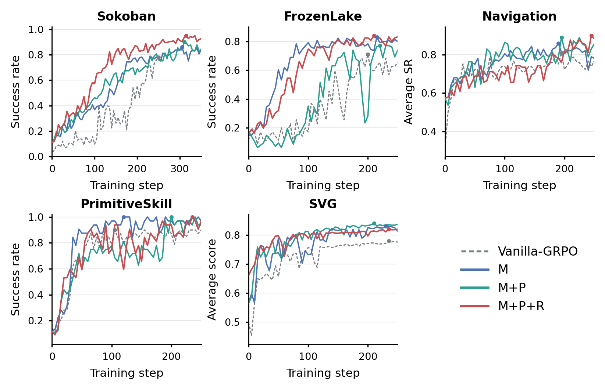
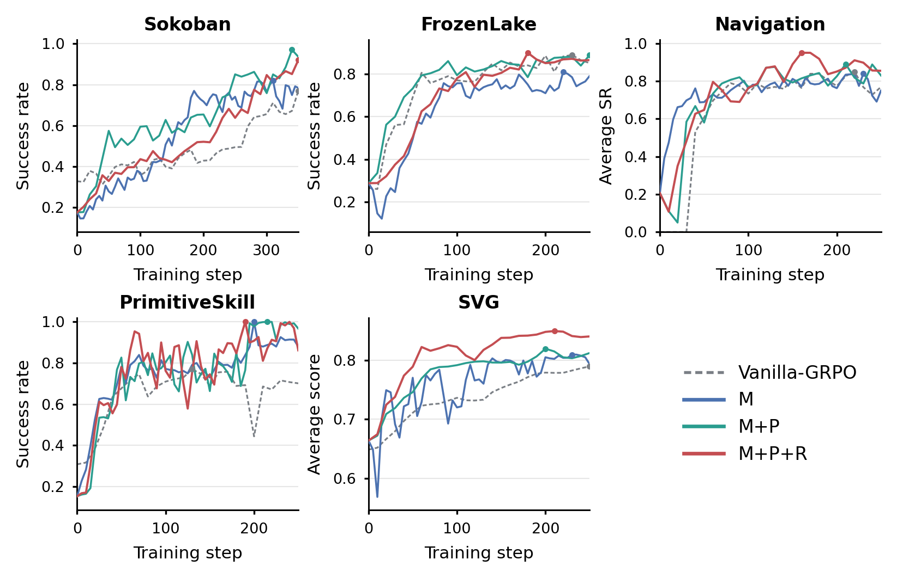
Impact of pivot-step localization
Relative to Vanilla-GRPO (0.78 Sokoban / 0.81 Navigation), a panel alone (P) or a failure mode alone (M) each reaches about 0.86. Combining them (M+P) reaches 0.90 / 0.89, and the full stack M+P+R peaks at 0.95 / 0.90.
Substituting the localized step with a uniform random index (M+P-Random+R) falls to 0.75 / 0.80—below Vanilla-GRPO. Arbitrary visual context is harmful noise; precise pivot localization is indispensable.
| Variant | Sok. | Nav. |
|---|---|---|
| Vanilla-GRPO | 0.78 | 0.81 |
| P | 0.86 | 0.85 |
| M | 0.86 | 0.86 |
| M+P | 0.90 | 0.89 |
| M+P+R | 0.95 | 0.90 |
| M+P-Random+R | 0.75 | 0.80 |
Further analysis
Self-evolving pivot localization
FrozenLake’s shortest-path solver gives ground-truth t* on failed rollouts, so Analyzer accuracy (t̂=t*) can be tracked during policy optimization. Under M+P+R, 15-step moving accuracy starts near 0.56, rises after step 50 to 0.90 by step 100, and later holds near 0.95. The Analyzer is self-evolving: sharper localization yields finer credit, with no separate diagnostic model to maintain.
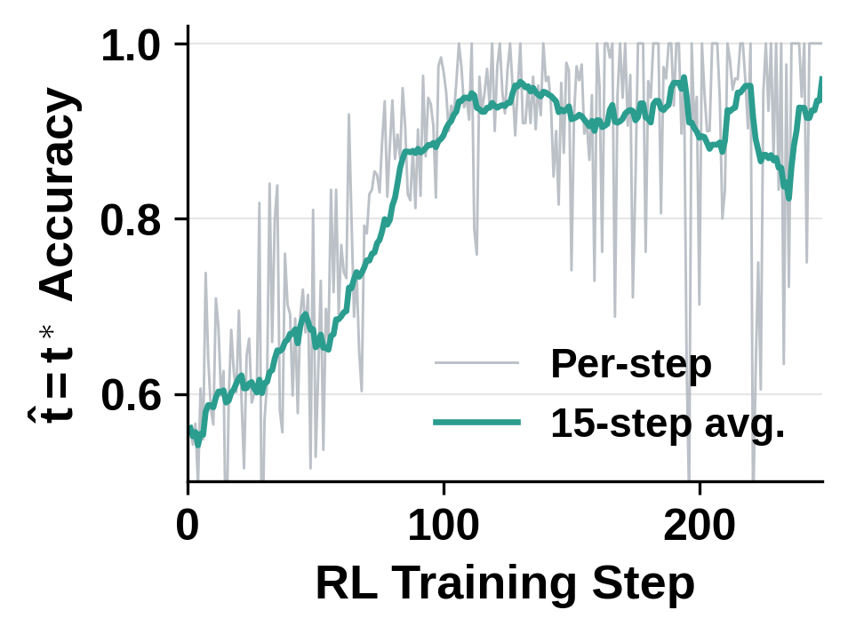
Training efficiency
Despite the multi-role diagnostic branch, PIVOT’s per-update latency on Sokoban is 95s, slightly under Vanilla-GRPO at 102s: unviable actions are suppressed early, rollouts shorten, and sampling—the main VLM RL bottleneck—gets cheaper. An external frozen Qwen3-VL-8B teacher instead costs 373s per step (3.9×). At test time, stripping diagnostic branches leaves an unprivileged student with zero parameter or inference overhead.
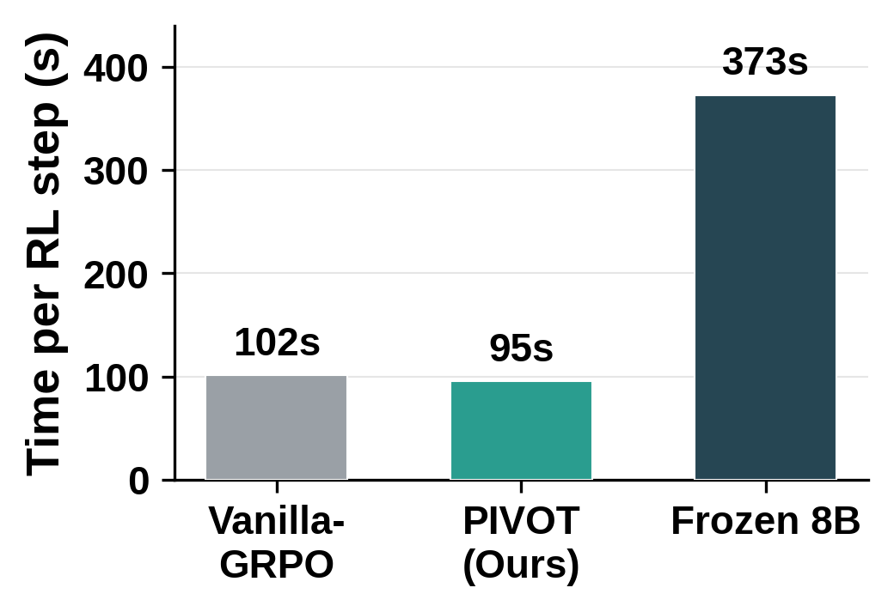